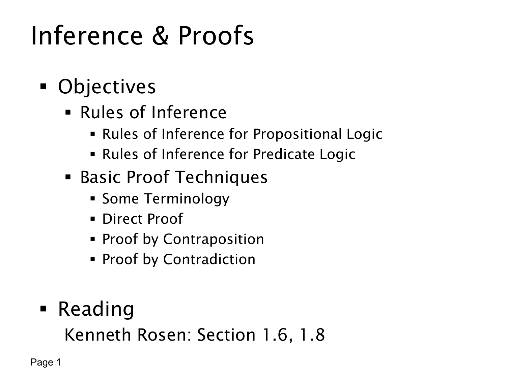

L1.3 · 第 1 页讲解原文
查看这一页课件

推理与证明：本讲学习路线
这页是 L1.3 的标题页与纲要，主题是 Inference & Proofs（推理与证明）。前两讲已经学习如何把陈述写成命题或谓词公式，以及怎样判断逻辑等价；本讲进一步问：给定若干前提，能否可靠地推出结论？怎样写出数学证明？
第一部分是推理规则（Rules of Inference），分为命题逻辑与谓词逻辑两层。命题逻辑中会用到“如果 p 则 q，又知 p，所以 q”这样的结构；谓词逻辑还要处理“对所有对象”和“存在某个对象”的量词，注意某条一般性陈述怎样应用到具体对象。
第二部分是基本证明方法（Basic Proof Techniques）。课件先安排术语，然后介绍三种方法：
- 直接证明（direct proof）：从已知条件出发，逐步得到结论。
- 逆否证明（proof by contraposition）：证明“若 p 则 q”时，改证等价的“若非 q 则非 p”。
- 反证法（proof by contradiction）：假设要证的结论不成立，推到矛盾，从而排除该假设。
本页给出的阅读范围是 Kenneth Rosen 教材第 1.6、1.8 节。它只是路线图：理解每种方法的前提、结论和适用时机，将在后续原页例题中展开。